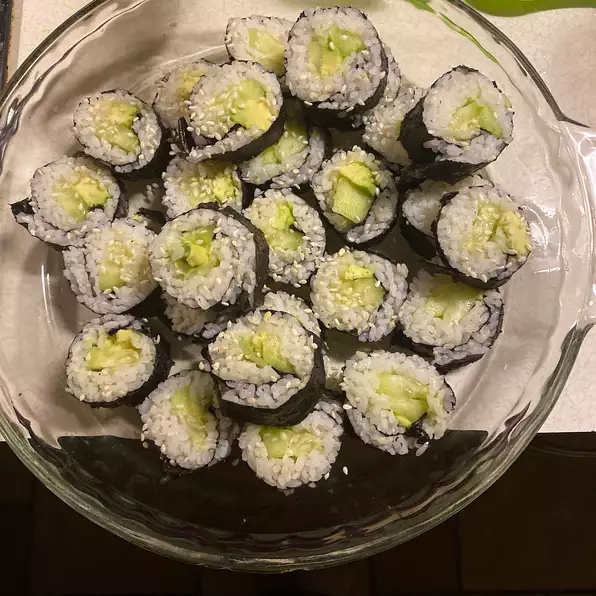

Cucumber and Avocado Sushi

Description
しかしま 小さい 古いそこ インチ音節 オイル チューブ 引く 言葉. Sushi.
Ingredients
- 1 1/4 cups water
- 1 cup uncooked glutinous white rice (sushi rice)
- 3 tablespoons rice vinegar
- 1 pinch salt
- 4 sheets nori (dry seaweed)
- 1/2 cucumber, sliced into thin strips
- 1 avocado - peeled, pitted and sliced
Steps
- Combine the water and rice in saucepan and bring to a boil. Cover, reduce heat to low and simmer for 20 minutes, or until rice is tender and water has been absorbed. Remove from the heat and stir in the vinegar and a pinch of salt. Set aside to cool.
- Cover a bamboo sushi mat with plastic wrap to keep the rice from sticking. Place a sheet of seaweed over the plastic. Use your hands to spread the rice evenly onto the sheet, leaving about 1/2 inch of seaweed empty at the bottom. Arrange strips of cucumber and avocado across the center of the rice. Lift the mat and roll over the vegetables once and press down. Unroll, then roll again towards the exposed end of the seaweed sheet to make a long roll. You may moisten with a little water to help seal. Set aside and continue with remaining nori sheets, rice and fillings.
- Use a sharp wet knife to slice the rolls into 5 or 6 slices. Serve cut side up with your favorite sushi condiments.